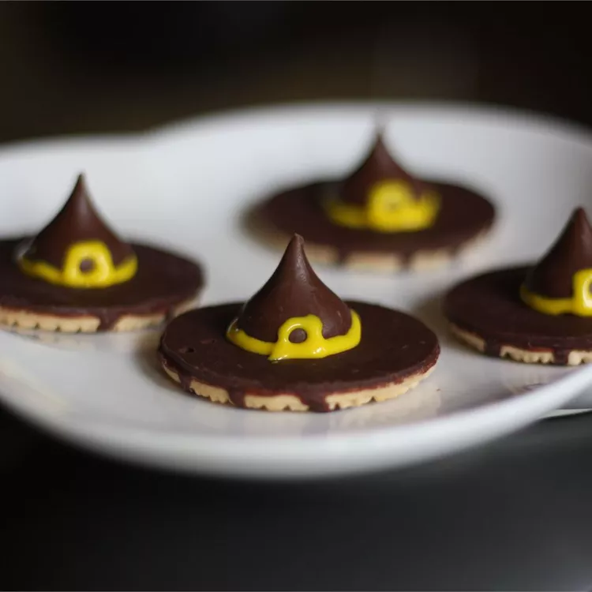

Witches' Hats

Description:
Witches' hats are cute and simple Halloween treats that everyone will love. The amount this recipe makes depends on how many cookies and chocolate kisses you have.
Ingredients:
- 2 (16 oz) packages fudge stripe cookies
- 1/4 cup honey, or as needed
- 1 (9 oz) bag milk chocolate candy kisses, unwrapped
- 1 (4.5 oz) tube decorating gel
Steps:
- Witches' hats are cute and simple Halloween treats that everyone will love. The amount this recipe makes depends on how many cookies and chocolate kisses you have.
- Use decorating gel to pipe a small bow onto the cookie at the base of the candy piece. Repeat with remaining ingredients.